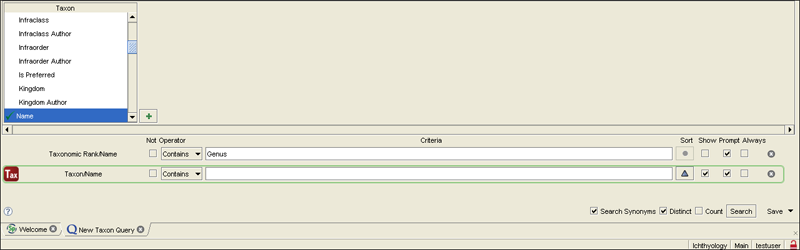

|
|
Query Builder |
One of the benefits and goals of entering data into the Specify database is to be able to retrieve the data in an organized manner. Specify's Query builder offers a flexible interface for defining and running searches. Queries are a precise request for information retrieval and can restrict the type of returned records based on the contents of almost any of Specify's data fields.
These queries can then be used to create Record Sets or Reports.
Open the query builder by clicking the  (Query button) on the Taskbar.
(Query button) on the Taskbar.
The side bar displays a list of frequently used tables to begin the query configuration. Less
common tables are found by clicking  (More Tables) in the side bar and choosing a table from the pop-up dialog.
(More Tables) in the side bar and choosing a table from the pop-up dialog.
A Query Creators Configuration tool gives access to less frequently used tables and also allows the side bar and More Tables lists to be interchanged and rearranged:
Choose Tabs > Configure side bar from the Menu bar or right-button-click an open section of the side bar to activate the Context Menu and choose Configure Query Creators to open the Configure New Queries dialog.
- Use the
or
(reorder) button to change the order in which the forms appear in the side bar and More Forms list.
- Use the
or
(move) button to move a side bar item to the Extra Forms list and vise versa.
- Click the
(add) button for a list of additional forms that can be moved into either the side bar or More Forms list.
- Click the
(delete) button to remove forms from either the side bar or More Forms list; this will put them back into the master list.
Note: deleting a table from either the side bar or More Tables will place it back in the master list which is accessed by the
A Configure Saved Queries tool allows saved queries to be rearranged on the side bar. Choose Tabs > Configure side bar from the Menu bar or right-button-click an open section of the side bar to activate the Context Menu.
Choose Configure Queries to open the Configure Queries dialog.
- Use the
- Use the
Choose a table from the side bar list to begin building the query.
Note: Because of the way Specify combines related information, almost every field can be found from within most tables. This will determine the data elements to be returned i.e. searching from Collection Objects (CO) will return CO records.
A list of fields available in the chosen table, as well as other related tables, appears in a list box at the top of the query work space.
To display fields in other tables, simply click a table in the list box. Fields and other related tables display in a new list box.
Choose fields and/or tables for the query from within the appropriate list boxes by either selecting the field/table and clicking the
By selecting fields to include in the search users can restrict the type of returned records based on the contents of almost any of Specify's 2500 data fields.
There is no limit on the number of fields added to a query, but larger, more complex queries will take a longer amount of time to run.
Specify 6 does not include default fields in a query as was found in Specify 5. For a column to appear in the results it must first be represented by a field in the query. Users who wish to always see a particular set of columns in their query results are encouraged to create a query with those fields and save the query. When creating a future query, simply click on the saved query first, then add to it to create the new query.
Specify 6 offers a grid view of results only.
Note: The Query Builder tool includes extra fields for Cataloged Date; Cataloged Date (Day), Cataloged Date (Month) and Cataloged Date (Year). This allows users to easily search for a specific Cataloged day, month or year.
Select a related table to be part of the search criteria by double clicking it in the list box. Tables are either formatted or aggregated, depending on their relationship to the primary Table and do not offer any other search criteria. Most tables in Specify have a default format and aggregate setting. Formats and aggregates can be edited, created or deleted in System > Schema Configuration.
Many-to-One (Formatted Data)
A many-to-one relationship involves a primary and related table in which many primary records are linked to a single related record in the related table. For example, many Collection Object records might be linked to the same Locality record because they were all found at the same location.
Tables with a many-to-one relationship are designated by an (
One-to-Many (Aggregated Data)
A one-to-many relationship involves a primary and related table in which many related records are linked to a single primary record in the related table. For example, several Collection Object records would be linked to a single record in the Collection Event table because all those specimens were collected during the same event.
Tables with a one-to-many relationship are designated by an icon (
When returning aggregated data, it is possible that a field may first be formatted.
Create Query Expressions to narrow the results.

Query Expression Box
Note: Not all fields include Criteria. For instance, a Check Box does not have searchable Criteria and needs only an Operator.
|
The operator Like allows a search to be restricted to a specific pattern of letters or symbols or both in a designated field. The wildcard character is an asterisk (*).
*Clinton Returns any string with Clinton at the end. Clinton* Returns any string that begins with Clinton.
*Clinton* Returns any string that includes Clinton anywhere in the string. When it is necessary to use an asterisk (*) as part of the literal search criteria, precede it with a "\". For example; when it is desired to find Cli*nton enter the search criteria as *Cli\*nton*.
The order of the condition row determines the order in which fields will be sorted as well as the arrangement of the fields in the results panel. If a query includes both Taxon Name and the Last Name of the Collector and both are sorted but Taxon Name is ordered first, Specify will sort Taxon Name first, then Last Name of the Collector.
Side Buttons Function Result Reorder Down Move the field down in order. The order determines how they will display in the results window. Reorder Up Move the field up in order. The order determines how they will display in the results window.
Bottom Controls Result Search Synonyms (checkbox) Includes synonyms in the query and query results. Distinct (checkbox) Returns unique results only (no duplicates).
When the Distinct button is used in a query, the query can not be used to create record sets, view results in data entry forms, or run reports.
When both Distinct and Sort are used in a Query the database may need to create its own Sort priorities due to the way that MySQL retrieves data.
Count (checkbox) Gives a count of the results in a pop up dialog in the query work space only. No results will display when the Count feature is in use.
Search (button) Engages the query. Pressing the Enter key will also engage the query. Save / Save As
(toggle button)Click the Save button to save the query as the same name or click the (toggle) button to choose Save As and rename the query. Saved queries appear in the side bar and can be reused.
Click on a saved query in the side bar to display it in the workspace window. Expressions can be edited using the controls above. Expressions that are used in a report may not be deleted.
Query results are limited to 20,000 records. A return count can include more records, but Specify can not display more than 20,000 result records. Use the Count checkbox if only a count of results is desired, or break a query into sections if it is too large.
Query results display as a grid in a query Results window. They are designated by a green (
) results bar.
Click on the title bar at the top of the column to sort the column. Dates should be in a MM/dd/yyyy format to sort correctly.
Results can be manipulated and utilized in various ways using the buttons on the results bar.
|
Note: Individual records opened from the query results will open in View mode. To edit the records click the
(Edit) button.
Query results can also be used to add records to an existing Record Set.
Click the
(Record Set) button at the bottom of the results window. The Choose a Record Set dialog will appear:
- Select a record set name in the list and click the OK button to add the selected records to the existing record set.
- Click the New button to create a new record set
- Click Cancel to close the dialog.
Or, select the records for the
Right-button-Click on the side bar to open the Query Context Menu:
|
The configure tools can also be accessed by choosing Tabs > Configure side bar from the Menu bar.
Queries are imported and exported as a group of queries contained in a file. Even when only one query is being exported, Specify writes the query to a file.
The exported query file will be saved as an xml file.
Import
- Right-button-Click in the side bar, then choose Import Queries in the context menu.
- Choose the file from the resulting file menu dialog
- Choose the queries to import from the resulting dialog list (of queries contained in the import file).
Note: When importing queries that have the same name as existing queries, Specify will simply add a number (2) to the import query name.
To export a query:
- Right-button-Click in the side bar, then choose Export Queries in the context menu.
- Choose the queries to export from the resulting dialog list and click the Save button.
- Name the file and choose a storage location for the file in the resulting file menu dialog, then click the Save button.
Queries can be deleted by dragging and dropping them onto the Trash Can in the side bar. A prompt will ask the user if they are sure they want to delete the Query.
Queries that are used in Reports may not be deleted.
Higher Level Taxonomic Searches
A special table of fields has been added to the schema to allow for the construction of a query that returns a list of nodes included in a particular level of a tree or a unique list of nodes currently used in a collection. This is available for the taxon, geography, storage, lithostratigraphy and chronostratigraphy tables/trees.

Taxonomic Rank Query Example
The query is shown above. The steps for creating the query include:
- Select either the taxon table for a list of nodes for a level of the tree or collection object table for a list of all unique nodes associated with a collection.
If you wish to include all items in a rank (independant of whether they are used by objects in your collection), choose the Name field from the taxon table.
If you wish to only include items used in your collection, then select the approporiate rank field from the taxon table within determinations.
- Select Taxonomic Rank > Name and add it to the query.
- Type the level you wish to query in the Criteria text box.
- Uncheck the Show box.
- Click the Sort box to sort the results in ascending order (if required).
- Check the Distinct box at the bottom of the work space if you wish to produce a unique list.
- Click the Search button.